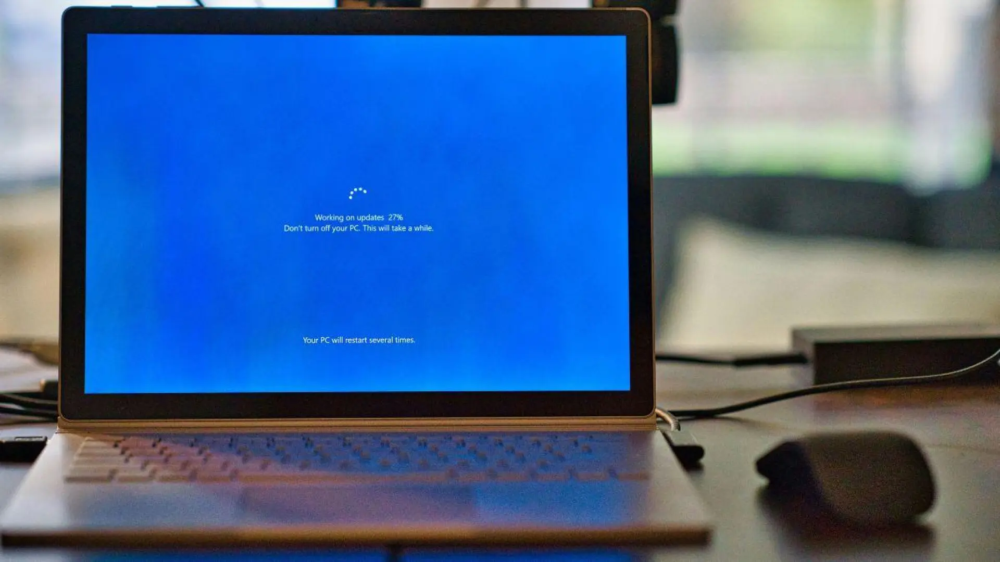

Microsoft lanza un parche urgente para aplicaciones y servidores: qué corrige el fallo de Brotli
Descripción del problema:
Microsoft ha lanzado un parche urgente para sus aplicaciones y servidores, abordando un fallo crítico en Brotli que podría afectar la seguridad de los sistemas. Este fallo permite a los atacantes ejecutar código malicioso a través de la compresión de datos, lo que podría comprometer la integridad de las aplicaciones y servicios afectados.
Solución Aplicada:
El equipo de seguridad de Microsoft recomienda a todos los usuarios y administradores de sistemas aplicar el parche lo antes posible para proteger sus entornos. Además, se aconseja revisar las configuraciones de seguridad y realizar auditorías periódicas para garantizar que no haya vulnerabilidades adicionales.